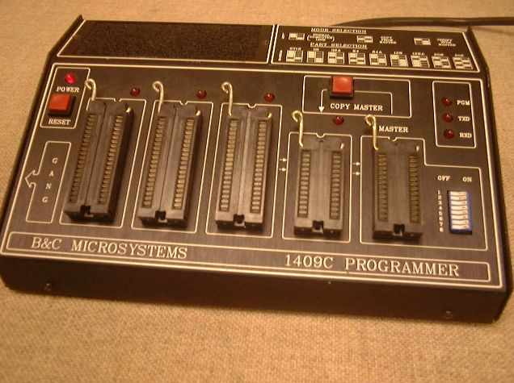

This page describes my efforts to restore a Commodore KIM-1 single board computer.
This is part of the Retrochallenge 2011 Summer Challenge that occured from July 1, 2011 to July 31, 2011. The Retrochallenges are designed to get retrocomputing enthusiasts to actually spend time doing what they like to do: mess about with old computers.
My project won first place. My prize was a vintage Amstrad NC200 Notebook Computer with users manual and leatherette case. It's quite nice and I look forward to playing with it. Second place went to brouhaha who recognized that the original Apple 1 was designed to have either a 6800 or a 6502, but nobody ever put a 6800 in one. He converted the Apple 1's 6502 monitor program to 6800 code and got it going with the MESS simulator. He contributed his work back to the MESS project, so everyone can have it now which is quite cool. He finished that early in the challenge, so continued some work on a HP-41 replica platform he's been working on. His prize was the book "Micro-Computer Technology" by Julian R Ullman, Professor of computer science at Sheffield University, 1982. Third place went to Aliennerd, who did some amazing things with an Epson PX-8 laptop, including devising a way to send Twitter tweets from it. His prizes were the books "Weird Computer Games" (Usborne computer books) by Jenny Tyler and C. Oxlade, 1984 and "The Pre-Computer Book" by F A Wilson, 1983.
There were lots of other cool projects and I suggest you check out the Retrochallenge page and take a look.
Here are the highlights of my project during the month-long challenge:
I continued working on this KIM-1 restoration after this retrochallenge ended. You can read about it in my 2012 Winter Warmup project page.
While the challenge was occurring, status updates were in reverse order with newer entries at the top. However, now that the challenge is over, I have put them in chronological order so you can read from start to finish.
Click on any picture to see a higher-resolution version.
I've sent in my entry. My goal is:
I am going to fix up a very unhappy KIM-1 that I bought a few months ago.
The contest runs from July 1, 2011 through July 31, 2011. I'll post more info on this project once the contest begins.
Well, here we are at the beginning of the Retrochallenge 2011 Summer Challenge. I wasn't sure if I'd enter the contest because I'll be out of town for about two weeks in the middle of the month. I chose to restore this KIM-1 because I figure I'll need to order some parts for it. Maybe I can time things so that I'm away when I'd wouldn't have been able to do anything except wait for the parts to arrive. Another reason I chose to restore the KIM-1 is that two other contestants in the challenge are doing things with KIM-1 or the more modern MicroKim. Maybe if I can actually get this thing running, they'll already have written cool software I can steal. :-)
Working KIM-1 boards seem to go for between $200 and $400 on ebay. That's quite a lot of dough for a very simple computer. However they're fairly rare, so that's the going rate. I bought mine for far less than that, but it's going to need some work. Here's a pic: (click on the image for a much higher-resolution version)
It appears to be a Commodore MOS KIM-1 Rev D, SN #2177 (I think that's a SN)
Here are some of the problems I see right away:
The missing display and analog components don't worry me too much. I'll be able to find suitable replacements easily enough.
The missing 6530 is quite worrisome though. This part has a mask ROM in it made especially for the KIM-1. Any similar parts are most likely already in running vintage KIM-1 boards. There are two of these parts on each board, and they have different ROM contents. I don't know which one is missing and whether the board can operate without it. Initially, I'm not interested in getting the tape audio circuit or current loop interface working, so maybe there's enough firmware in the first ROM to operate the keyboard and displays.
There's plenty of KIM-1 documentation on the Internet, so researching this shouldn't be too bad.
Unlike most of my retrocomputing, I never used the KIM-1 "back in the day". Therefore I've had to do quite a bit of research and learning. There is a tremendous wealth of information about the KIM-1 on the internet. One site really stands out: Erik Van den Broeck's KIM-1 page. He has converted the KIM-1 Hardware, Software, and Users manuals to HTML. They're beautiful, searchable, and quite understandable.
Another great site is Ruud Baltissen's Build your own KIM-1. There's a schematic of the original KIM-1, a discussion of how to work around the impossible-to-find 6530 RRIOT parts using a 6532 RIOT and EPROM, and a schematic of a replica KIM-1 with the workaround.
The part that I'm missing is the 6530-002 RRIOT (ROM-RAM-IO-Timer) chip. This isn't going to be easy to find. I have put out a call to the vintage computer community to see if anyone has one knocking around, but the sad fact is it's just not likely there are any spares out there. Most likely, I'll have to implement a workaround. The problem with the 6532-based workaround in Ruud's page is that the 6532 has a vastly different pinout than the 6530. Implementing that will require making a translation board. That's not completely out of the question, but it is a bit cumbersome.
Ebay does have some 6530 parts listed. It is highly unlikely that these will be the exact part I need. Most likely they'll have different ROM contents. I've been thinking that I could use a different 6530, disable the ROM function, and piggyback an EPROM part.
Another wrinkle is that even with different ROM contents, the 6530 had 0, 1, or 2 chip select pins taken from two of the IO pins. This was configurable when the customer ordered the part from MOS when they provided the ROM content. The 6530-002 I'm looking for has one chip select, and therefore is missing its PB6 line. This is probably a common configuration, so I just might go ahead and buy a few old 6530s and see what I get.
As for the 7-segment LEDs, I've been thinking I'll yank out what's there, put in low profile sockets, and put in all new displays. However, when I turned the board over I saw that one of the displays was already desoldered, yet it won't come out! It appears there's still some solder on the top side of the board holding the pins in. Probably whoever attempted this previously on this board pulled the display out anyway, and that's why one of the traces on the top of the board is detached. I'll have to figure out a better way to get these displays removed.
I did straighten out the transistors. Luckily, all the legs appear to be intact and not touching each other.
The shadow from the flash in the picture above shows the trace that's hovering above the PCB.
Finally, I've been looking at Briel Computers Micro-KIM. I'm secretly toying with putting the KIM-1 aside, spending the $150 for a fully-assembled Micro-KIM, and getting on with life. :-)
After more research, it looks like it's not so simple to find a different 6530, hope it has the desired chip selects, and defeat the ROM. Another mask-programmable aspect of the 6530 is the actual addressing of the IO and RAM within the 6530's address space. This was implemented so that a designer could have multiple 6530s in a system with minimal glue logic. They'd just need to order their 6530s so that they didn't have any addresses in common and wire them essentially in parallel. It's really a very cool idea. It's just too bad they didn't make a one-time-programmable version of the part.
So, the likelihood that going out and buying some random old 6530 and having it be useful is low. Therefore, I'm now planning to make a 6530 module out of a 6532, EPROM, and a little glue logic. It will be an ugly little riser card. You've been warned.
Today I got a bit sidetracked (and a bit poorer) buying NS 32k components. Perhaps that's for some future retrochallenge.
And I've still got my eye on that Micro-KIM.
I've been out of town and away from my toys for a while now. Last week I was holed up in a hotel in Salt Lake City doing my regular job. I am a full-time telecommuter. Had I not told them, I don't think anyone I work with would have known I wasn't at home. This week has been vacation, but pretty much every day has a more grueling hike than the previous. I live close to sea-level, and most of these hikes have been above 8000 ft (~2500 m). Here's a shot of the GPS as we started a hike one day.
(10416 ft = 3189 m)
Note the white background in the picture. That's snow. Even though it's summertime here, we've been hiking through quite a bit of the stuff.
Back to retrochallenge. Even though I'm not at home where my project is, many of the tasks ahead are things I could theoretically do while I'm away.
If I can get these parts ordered and have them arrive at my home early next week, I'll have one last week to assemble the 6530-replacement board and install the new LEDs.
The only problem is that at this altitude my brain isn't quite capable of focussing on the task.
I ordered a bunch of parts for the project. My hope is that they'll arrive on Monday. I'll be getting two 6532s, seven 7-segment LED displays, and a bunch of IC sockets (for the RIOT, EPROM, as-yet unspecified glue logic, and the LED displays on the KIM-1 itself). Except for particularly expensive parts, I like to get an extra one of each item. That way I don't have to worry too much if I fry something during soldering, break a pin plugging something in, or accidentally swap Vcc and Gnd.
Some of the 40-pin sockets are wire-wrap sockets. Even though the legs will be soldered to the home-brew daughter board, the long legs will extend down to the main KIM-1 board. There are more professional ways of doing this, but I've used wire-wrap sockets in the past for this and it worked well.
I also remembered to order two edge connectors that will fit the KIM-1. That's the proper way to power the board, plus there's a line called DECEN that needs to be connected to ground or the chip selects for the peripherals on the board won't work right. (The purpose of the signal is that if you add external circuitry, you can fine-tune the KIM-1's onboard address decoding.)
I've also been reading up on the 6530 RRIOT and the 6532 RIOT. One of the projects to build a KIM-1-like computer with 6532s, large SRAM and standard EPROM shows how to do the address decoding for these things, but it's in the context of the overall address space. My project will be using the existing chip selects and decoding for the non-existent 6530, so my glue logic has to do everything relative to how the KIM-1 sees the single 6530-002 part. It's a subtle difference. I haven't worked out the details yet.
My current plan is to replace the LED displays first, then rig up a protoboard to the 6530-002's socket so I can try out my replacement circuit before committing it to a soldered circuit board.
The parts arrived. I ordered from Jameco Electronics in Belmont, CA because they had the 6532s. Actually, the parts shipped Friday and arrived Saturday, before I even got home from vacation. It really was a blast from the past to order from them because I used to buy the exact same kinds of stuff (sockets, leds, chips, etc.) from them 25 years ago when I was in college.
Change in plans, again. I was thinking why start out trying to recreate the 6530 on a daughter card? I should really test the existing parts on the KIM-1 before proceeding. There's a 6502 CPU, a 6530-003, 1K SRAM, some LEDs and the keypad. I plan to use the KIM-1's Application and Expansion connectors to get at the signals so that I can put in a custom EPROM with a modified version of the KIM-1's monitor program. I can make it so the ROM is at the high end of the address space where the reset vector is. At the same time, I'll make it so that the KIM-1's regular address decoding is limited to the bottom 8k. Of the two 6530s, the one that's missing is the one that connects to the keyboard and LEDs. I'll have to borrow the one 6530 I do have and put it into the socket that connects to the keyboard and LEDs. The 64 bytes of RAM in it, IO, and timer will not be at the addresses where the original monitor firmware expects them, so I'll have to modify the firmware a bit in my custom KIM EPROM.
I should probably start out with a simple program that just tests the 6502 to see if it's at least operating, then test the SRAM, then test the 6530-003 sitting in the 6530-002's socket, then test the keypad and LED displays.
This is a lot of EPROM burning and erasing, so I figured it was time to dust off my old EPROM programmer. It's a B&C Microsystems 1409C that I built back in 1986. Here's a picture of one I pulled off the web:

Unfortunately, this is what mine looks like:
The builtin eprom eraser (lower left) is removed to make room for a custom hack board I added to the programmer in 1988 (according to my notes). I added a 6116 RAM by piggybacking off the EPROM socket inside the programmer itself (much like I plan to do with the KIM-1 here in July 2011!) I'm not quite sure why I did this hack, but I think I had a grandiose plan to rewrite the 8085 firmware in the programmer and add the capability to program more devices. That project is unfinished, but at least the programmer is in an operable state.
Before moving on, note the wirewrap socket jammed into the KIM-1's 6530-002 socket. That's probably how my daughter card will ride on the KIM-1 eventually. Plus I've got an edge connector attached to the upper expansion connector.
Here's a better view of the hack board inside the EPROM programmer:
From left to right, the EPROM holding firmware which I think I downloaded from B&C in the early '90s, the empty wirewrap socket that connects to the lower firmware socket, and the 6116 SRAM.
Anyway, it appears to be able to read 2716's I've got hanging around, some of which are already erased.
Here's a picture of my homebrew EPROM eraser, made from raw materials:
There's also an EPROM there right under the bulb ready to be erased.
Tomorrow, I hope to attach an EPROM to the KIM-1 and write some programs to test things out.
I cracked out the Heathkit ET-3300 breadboard and power supply. I'll use this for my prototyping with the KIM-1. I also wired up the KIM-1's Application Connector. That was easy because I needed only 3 wires. I've started the Expansion Connection, but that one will need about 30 wires.
The circuit to add the EPROM will be very simple. I hope to have it wired up tomorrow.
Someone was having difficulty converting -5 to hexadecimal in a signed 8-bit context. Here's how to do it:
Decimal: 5 Binary: 0000 0101 One's complement: 1111 1010 Two's complement: 1111 1011 (add 1 to one's complement) Hexadecimal: F B
I've got the breadboard and 2716 EPROM connected to the KIM-1. There's a simple program in the EPROM which tests that the CPU is functioning.
And here's the listing for the cpu test eprom:
AS V1.42 Beta [Bld 79] - source file cputest.asm - page 1 - 7/28/2011 20:23:58
1/ 0 : PAGE 0
2/ 0 :
3/ 0 : ; Test of KIM-1 CPU only. Not comprehensive, just see if it works.
4/ 0 : ;
5/ 0 : ; Environment: 3-8 decoder divides address space into 8 parts:
6/ 0 : ; 0000 - 1fff
7/ 0 : ; 2000 - 3fff
8/ 0 : ; 4000 - 5fff
9/ 0 : ; 6000 - 7fff
10/ 0 : ; 8000 - 9fff
11/ 0 : ; a000 - bfff
12/ 0 : ; c000 - dfff
13/ 0 : ; e000 - ffff
14/ 0 : ;
15/ 0 : ; A 2716 EPROM (2K which is 800h bytes) is attached to the 7th decoder output
16/ 0 : ; and address lines A12 and A11 are not connected, ; so it repeats at e000,
17/ 0 : ; e800, f000, f800. For this exercise, let's just assume it starts at f800
18/ 0 : ;
19/ 0 : ; The 0th decoder output is connected to the /DECEN line, which enables the
20/ 0 : ; onboard KIM-1 decoder for the RRIOTs, and 1K SRAM at 0000-3fff
21/ 0 : ;
22/ 0 :
23/ 0 : =$c000 oe6 equ $c000
24/ 0 : =$a000 oe5 equ $a000
25/ 0 : =$8000 oe4 equ $8000
26/ 0 :
27/ f800 : org $f800
28/ f800 : reset:
29/ f800 : d8 cld ; clear decimal mode arithmetic
30/ f801 :
31/ f801 : a9 14 lda #20 ; count down a from 20
32/ f803 : aloop:
33/ f803 :
34/ f803 : a0 00 ldy #0 ; count down y from 256
35/ f805 : yloop:
36/ f805 :
37/ f805 : a2 00 ldx #0 ; count down x from 256
38/ f807 : xloop:
39/ f807 : ca dex
40/ f808 : d0 fd bne xloop
41/ f80a :
42/ f80a : 8d 00 c0 sta oe6 ; bang on the oe6 line
43/ f80d : 88 dey
44/ f80e : d0 f5 bne yloop
45/ f810 :
46/ f810 : 8d 00 a0 sta oe5 ; bang on the oe5 line
47/ f813 :
48/ f813 : 38 sec
49/ f814 : e9 01 sbc #1
50/ f816 : d0 eb bne aloop
51/ f818 :
52/ f818 : 8d 00 80 sta oe4 ; bang on the oe4 line
53/ f81b :
54/ f81b : 4c 00 f8 jmp reset
55/ f81e :
56/ fffa : org $fffa
57/ fffa : nmivec: dfs 2
58/ fffc : 00 f8 resvec: fdb reset
59/ fffe : irqvec: dfs 2
60/ 10000 :
Today I've been writing tons of little programs to test things on the KIM-1 board. Results have been somewhat troubling.
However, I'll start with a success. I took the original KIM-1 source listing, converted it to syntax that my assembler, "asl", understands, and was able to assemble it. I verified that the resulting output matches ROM images of 6530-002 and 6530-003 that I found on the web. This is useful because one of my tests was to modify this code for various different addresses, such as the ROM itself residing at f800 and the 6530-003 (which I do have) sitting in the socket for the 6530-002 (which I don't have). I actually did try that experiment and it did not work. I then went back to the little tests to see what's working on the board.
I got somewhat hung up on testing the 1K of RAM on the KIM-1 board. My first ramtest program indicated there was a failure somewhere in the RAM. Remember, I still don't have a whole lot of output at my disposal, so I'm still indicating various bits of status by pinging select lines on a 3-to-8 decoder and looking at them with a logic probe.
By modifying the ramtest program, I found that page 0 (0000-00ff) and page 1 (0100-01ff) test fine, but pages 2 and 3 do not. This is somewhat good news because page 0 is important in 6502 code to keep various values and pointers. Page 1 is where the stack is, and is critical for operation if you're going to do anything with subroutines (which is pretty much required for anything one would want to do with a microcomputer). So, it's good news that page 0 and page 1 are okay and the faults are in page 2 and page 3. What's not good is that all these addresses are served by 1024x1 static ram parts. So if there's a fault in one of the ram chips, that chip actually serves one bit of all the addresses in the first 1k. Faults might show up in page 0 and page 1 any time now. It took several versions of the ramtest program to narrow this down to the page granularity.
I also attempted to test the 6530-003 part that I have sitting in the U3 socket. (I'm missing -002. I got confused in yesterday's video about which one I'm missing.) The 6530 has RAM, ROM, IO, and a Timer. I started by testing the 64 bytes of RAM, and that gives a failure. Ugh. Either the part is bad, or I've gotten confused on what addresses it should be at. The test didn't proceed to the ROM test or IO test, and I've run out of time for today.
Here's a picture of my work area.
Note the large number of EPROMS that have been burned. It's a good thing that I've been hoarding 2716's for the past 30 years. Also note that I have a ZIF (zero-insertion-force) socket on the breadboard. It's been really nice having that there while I'm swapping all these EPROMs in and out.
There is so much that doesn't seem to work on the board, I thought that I might have power problems. I checked some voltages on the board and they did seem a bit low at 4.75 volts. I'm now using a beefier power supply (from an old AT-style computer) and the voltages are a bit better. Unfortunately, none of the problems magically disappeared as I was hoping. I'll keep the bigger power supply in place until I get all the problems figured out, then go back to the lesser supply and see if things still work.
I think the one 6530 that I do have isn't any good. No amount of prodding has gotten any signs of life out of it. I'm not quite ready to give up on it yet, but I have put it aside. That's a 6530-003, which doesn't do much for the actual operation of an unexpanded KIM-1, except hold half the ROM monitor. It's the 6530-002 in location U2 (the lower one in the pictures) which I need replicate.
Today I wired up a 6532 RIOT (ie. no on-chip ROM) into the circuit and put it at address 2000h. I've got its IO lines going straight to the appropriate places on the U2 socket so it should be able to control the LED displays and get data from the keypad. I modified the KIM-1 ROM monitor program with the new addresses of the IO ports, onchip RAM, and location of my EPROM to see if I can get the KIM-1 display and keypad functioning. I still haven't fixed all the LED displays, but I figured I should be able to at least see the ones there that are working show something.
It partially works, I can see the initial display of a "0", but it's not responding to my keypresses. I suspect that the SRAM at pages 0 and 1 is not healthy enough to actually support the ROM monitor.
Tomorrow I'll wire up some replacement RAM at low memory and evaluate where to go from there.
This is the last day of the retrochallenge and it sure has been a busy day here. But at the end ... WE HAVE A WORKING KIM-1!
I started off the day by adding a static RAM part to the proto board. When that was put in place at address 0, the KIM monitor started behaving.
Then I started replacing the displays. I used 14-pin IC sockets, because I wasn't sure if I'd ordered the right parts, and I didn't want to have to do any more desoldering than necessary. It turns out this was a good decision, as I did in fact order the wrong displays. The pinout was all wrong. I didn't know they came like that, but I do now. After an emergency run to Fry's, I came home with the right parts. Here's a picure of the new displays in action.
I spent quite a bit of time trying to figure out what was wrong with the KIM-1's onboard RAM. I found a memory test program in The First Book of KIM that worked quite well at exercising the RAM enough to fail. A few mods to the program and I was able to determine exactly which bit was failing. The KIM-1's SRAM is made up of eight 1024x1bit 2102 SRAM parts. Determining which bit then leads me to which actual IC is faulty. I found out that it is bit#1, represented by the 2102 at location U11. I do plan to replace it, but I ran out of time. (As it happens, I have a stash of 2102s that I've been carrying around since I was about 11 years old. They were part of a Signetics 2650 project that didn't go anywhere.)
However, the KIM-1 is quite functional for doing KIM-1-like activities. I whipped up a little program that counts up and shows the value on the LED displays.
Here's a video showing today's activities plus the program counting up.
And here's the counting program:
AS V1.42 Beta [Bld 79] - source file countup.asm - page 1 - 7/31/2011 20:21:22
1/ 0 : page 0
2/ 0 :
3/ 0 : =$fb pointh equ $fb
4/ 0 : =$fa pointl equ $fa
5/ 0 : =$f9 inh equ $f9
6/ 0 : =$ff1f scands equ $ff1f
7/ 0 :
8/ 0 : org 0
9/ 0 :
10/ 0 : a9 00 lda #0
11/ 2 : 85 fb sta pointh
12/ 4 : 85 fa sta pointl
13/ 6 : 85 f9 sta inh
14/ 8 : loop:
15/ 8 : 20 1f ff jsr scands
16/ b : e6 f9 inc inh
17/ d : d0 f9 bne loop
18/ f : e6 fa inc pointl
19/ 11 : d0 f5 bne loop
20/ 13 : e6 fb inc pointh
21/ 15 : 4c 08 00 jmp loop
22/ 18 :
Note that the scands subroutine's address is different than what the regular KIM-1 (or MicroKIM) user would expect. This is due to the fact that the my KIM-1 ROM has been reassembled to run at a different location than the stock KIM-1 ROM.
And that's it for my 2011 RetroChallenge entry. I'm quite proud to have this project to the point where I have a working KIM-1 given the setbacks: a missing RRIOT, a faulty RRIOT, faulty RAM, and the abuse in the LED displays area. I think I'll still go ahead and make the daughter card so that this KIM-1 can operate with the stock KIM-1 firmware and without the assistance of the protoboard. But for now, I've got enough KIM-1 to play around with.
Have a good summer, folks! See you next year.
Gilbert
Gilbert Coville
{kind=link}
{kind=link}
{kind=link}
{kind=link}
{kind=link}
{kind=link}
{kind=link}
{kind=link}
{kind=link}
{kind=link}